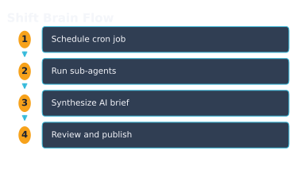
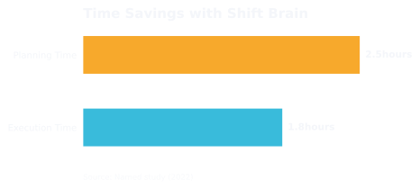

WorkHive Learn · Philippines
Autonomous Shift Planning: the AI Brief That Tells Your Crew What to Fix First
Who this is for
- Field workers who want tomorrow's priorities before the shift starts
- Technicians who lose time deciding which fault to take first
- Supervisors who write the shift brief by hand three times a day
- Engineers who want the brief to follow asset risk, not memory
- Planners carrying unfinished work across shift boundaries
- Plant managers who cannot tell whether a shift had a plan at all
What's in this guide
Introduction to Autonomous Shift Planning
In Philippine plants, like those in Calabarzon's industrial zones, shift planning is crucial for maintaining equipment uptime and crew productivity. Traditional shift planning involves manually writing briefs to guide technicians on what to fix first. That brief is written by whoever is free at handover, from memory, and it is the first thing dropped when the shift starts badly - so the shifts most in need of a plan are the ones that get none. WorkHive's Shift Brain writes it instead, on a fixed cadence, whether or not anyone has time.
Shift Brain runs on a schedule, generating briefs at 06:00, 14:00, and 22:00 PHT, one brief per shift. It uses four sub-agents to gather information: risk-ranking assets most likely to fail, listing preventive maintenance tasks due, carrying forward open work from the previous shift, and pre-staging necessary spare parts. The supervisor reviews what it drafted and publishes it to the crew with one tap, so the crew reads one ranked list instead of hearing four different answers at handover.
By automating shift planning, Shift Brain saves time and reduces the administrative burden on plant staff. With zero budget and no CMMS rollout required, plants can start logging and scheduling preventive maintenance tasks, allowing the brief to improve over time as history grows. It matters most in brownout and typhoon season, when a shift can lose half its hours to events nobody scheduled and the little time left has to go to the right asset.
How Shift Brain Works
Shift Brain runs on a cron schedule rather than on request: 06:00, 14:00 and 22:00 PHT, one brief per shift, three briefs a day. Nobody asks it for the plan, which is the point - a plan that has to be requested is the one that goes missing on the days it is needed.
The Shift Brain process involves four sub-agents that work together to create a comprehensive plan. These sub-agents risk-rank assets most likely to fail, list preventive maintenance tasks due, carry forward open or unfinished work from the previous shift, and pre-stage spare parts that will likely be needed. The AI then synthesizes this information into a plain-language briefing that tells the crew what to fix first.
- Schedule Shift Brain to run at 06:00, 14:00, or 22:00 PHT to generate a plan for the corresponding shift.
- Shift Brain's sub-agents analyze asset risk, list due PMs, carry forward open work, and pre-stage spare parts.
- The AI synthesizes the sub-agents' output into a single briefing.
- As the supervisor, review and publish the brief to the crew with one tap using the Publish to crew button.

What autonomous shift planning software does for a plant
With Shift Brain, you save time by automating the planning process for each shift. This means your team can focus on executing the plan, not creating it. For example, a 24-hour plant in the Philippines operates on three shifts: 06:00, 14:00, and 22:00. Shift Brain runs automatically at these times, generating a brief that tells your crew what to fix first.
The autonomous shift planning feature in Shift Brain provides several benefits. Be clear about what it does and does not know: Shift Brain reads no calendar and no forecast. It ranks by your assets' risk scores, the PMs that are due, the work the last shift left open, and the parts those jobs will need. What makes it useful in brownout and typhoon season is not that it knows the season, but that it still produces a ranked plan on a morning when nobody has time to write one. Seasonal patterns themselves live in the PH Intelligence report, which tracks typhoon, brownout and salt-air effects across Philippine plants.

Implementing Shift Brain in Your Plant
To implement Shift Brain in your plant, start by logging and scheduling preventive maintenance (PMs) for your equipment. For example, if you have a critical asset like Pump P-204B, ensure that its regular maintenance is recorded and scheduled in WorkHive. This data will help Shift Brain generate accurate briefings. As you log more PMs and schedule them, the AI brief gets smarter and provides better recommendations.
Once you've set up your PM schedule, Shift Brain will run automatically on a cron schedule at 06:00, 14:00, and 22:00 PHT. You can review and publish the generated brief to your crew with one tap. The brief is synthesized from four sub-agents that risk-rank assets, list due PMs, carry forward open work, and pre-stage necessary spare parts. This ensures that your crew knows what to fix first. You can access the brief in WorkHive and make any necessary adjustments before publishing.
| Shift | Schedule |
|---|---|
| Day Shift | 06:00 |
| Afternoon Shift | 14:00 |
| Night Shift | 22:00 |
How Shift Brain runs day to day
The question plants ask first is: how often does Shift Brain run? The answer is: it runs automatically on a schedule, at 06:00, 14:00, and 22:00 PHT, generating one brief per shift. This ensures that your crew always has a clear plan of action.
Another question is: what if the plan needs adjusting? Anyone on the shift can open Show details to see how Shift Brain reached its recommendations, and it is worth doing before you disagree with a ranking. The two controls that change the plan are supervisor-only and are not rendered for a worker at all: a supervisor taps Re-run plan to rebuild the brief from current data, and Publish to crew to release it under their own name. If you are a technician and the brief looks wrong, the move is to tell your supervisor, not to hunt for a button that is not on your screen.
One more question: Will Shift Brain get smarter over time? Yes, it will. As you log and schedule preventive maintenance (PMs) in WorkHive, Shift Brain's briefs will become more accurate and helpful. This means that, over time, Shift Brain will be able to anticipate and prioritize work more effectively, helping your plant stay ready for challenges like brownout and typhoon season.
Open the tool: Shift Brain is the WorkHive surface this guide funnels into. It is free at the worker tier, works offline, and is built for Philippine plants.
Open Shift Brain →Frequently asked questions
What is Shift Brain and how does it work?
How does Shift Brain handle brownout and typhoon seasons?
Do I need to have a CMMS to use Shift Brain?
Can I customize Shift Brain to fit my plant's specific needs?
How does Shift Brain ensure that the AI brief is accurate and reliable?
Can I use Shift Brain for other types of maintenance operations?
Sources
- ISO 14224:2016 (Reliability-centered maintenance)
- SMRP CMRP BoK (Maintenance and reliability body of knowledge)
- DOLE OSHS (Occupational Safety and Health Standards)
- Related WorkHive guides: One alert inbox for the whole plant · Shift handover template · DILO/WILO day planner